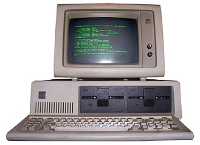

Sun, 16 Oct 1983
My new IBM 5150

The IBM Personal Computer, commonly known as the IBM PC, is the original version and progenitor of the IBM PC compatible hardware platform. It is IBM model number 5150, and was introduced on August 12, 1981. It was created by a team of engineers and designers under the direction of Don Estridge of the IBM Entry Systems Division in Boca Raton, Florida. Just have a look!Read more on Wikipedia.